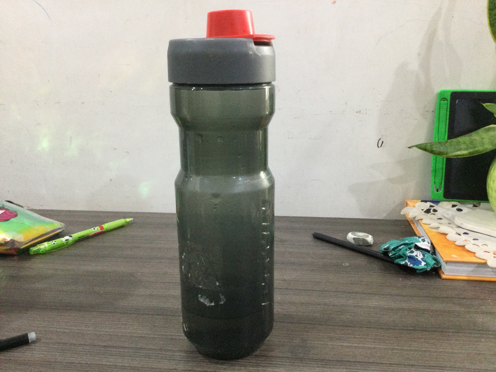
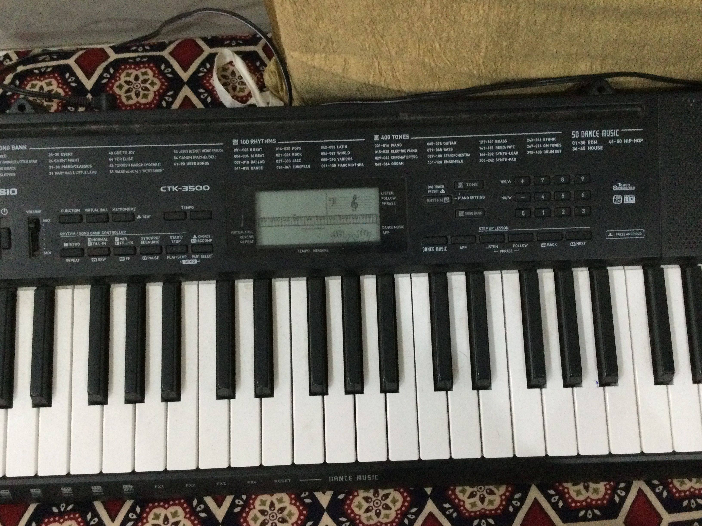
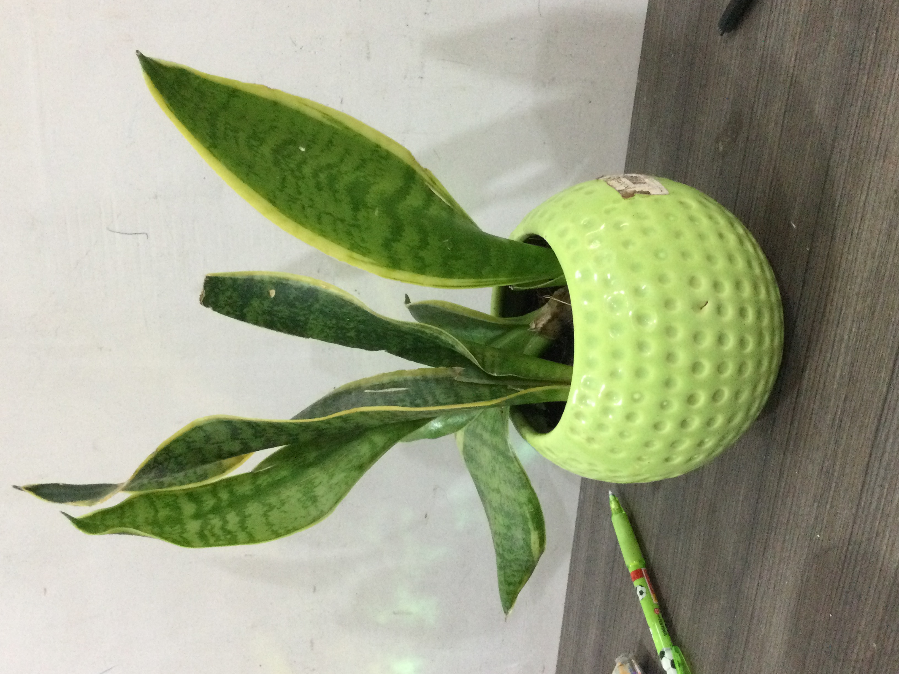
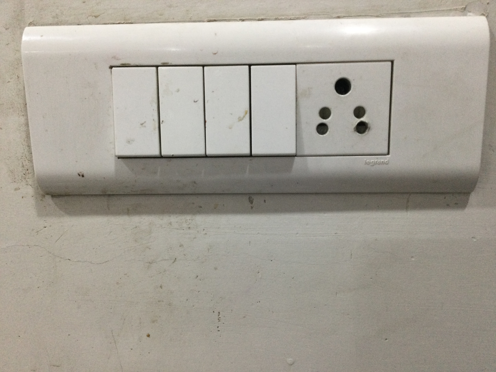
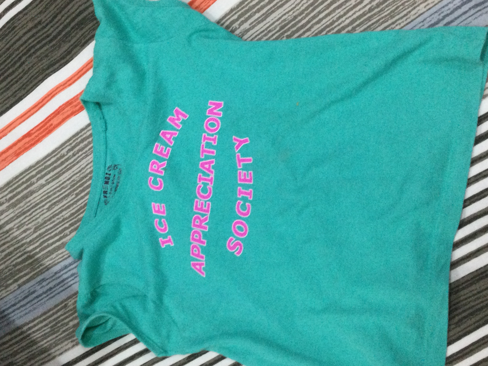

Case Study
1.test image

Output on Microsoft azure : a bottle on a table
Output on MobileNet : water bottle
Result
Mobilenet Model is more accurate
2.test image
Output on Microsoft azure: a close up of a teddy bear
Output on MobileNet : teddy bear
Result
Mobilenet Model is more accurate
3.test image

Output on Microsoft azure : a close up of a piano
Output on MobileNet : upright piano
Result
Microsoft azure is more accurate
4.test image

Output on Microsoft azure : a green plant
Output on MobileNet : pinwheel
Result
Microsoft azure is more accurate
5.test image

Output on Microsoft azure : a close up of electronics
Output on MobileNet : electrical switch
Result
Mobilenet Model is more accurate
6.test image
Output on Microsoft azure : a stack of flyers on a table
Output on MobileNet : comic book
Result
Mobilenet Model is more accurate
7.test image

Output on Microsoft azure : a blue and white shirt
Output on MobileNet : t-shirt
Result
Mobilenet Model is more accurate
Result
I have tested 7 images Mobilenet have predicted 5 of them correctly.
And Microsoft azure have predicted 2 of them correctly.
So according to my case study MobileNet is more accurate